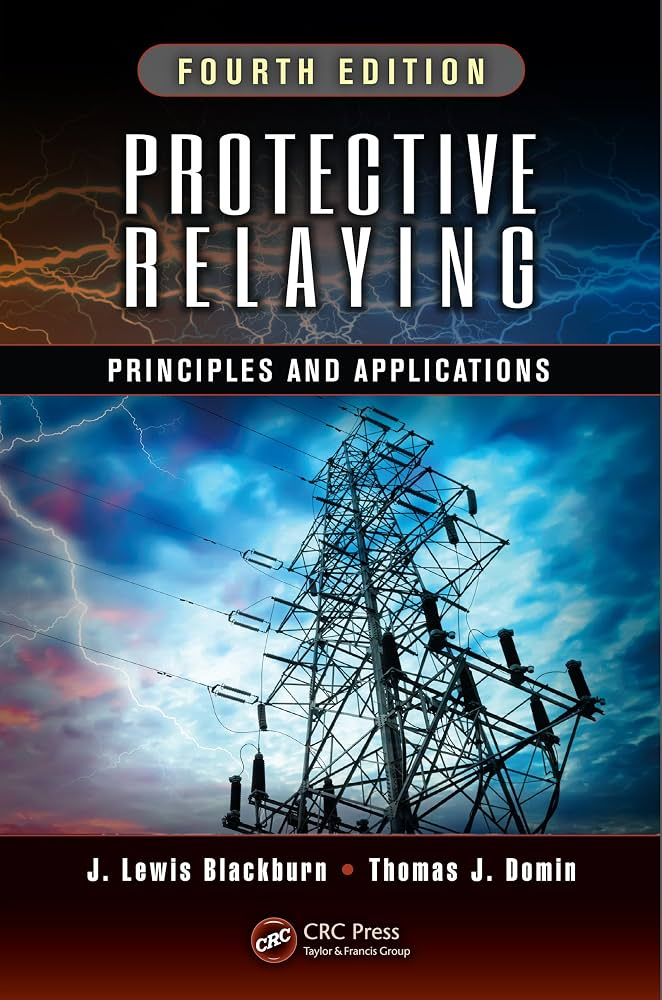
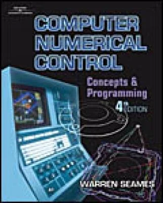
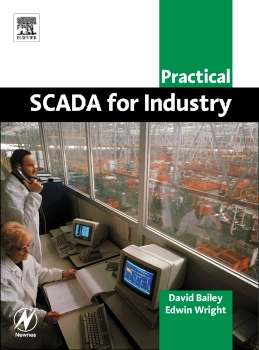

● ملخصات:
● شروحات:
- Mohamed Dorbok
● كتب:
1-Protective Relaying: Principles and Applications — J. Lewis Blackburn & Thomas J. Domin
2-Power System Protection — P. M. Anderson

● ملخصات:
● شروحات:
- ESC For Engineering
- Dr. Eng. M. Heshmat
● كتب:
1-Computer Numerical Control: Concepts and Programming — Warren S. Seames
2-CNC Programming Handbook — Peter Smid

● ملخصات:
● شروحات:
- تقنيات-الهيتي
● كتب:
1-Practical SCADA for Industry — David Bailey & Edwin Wright
2-SCADA: Supervisory Control and Data Acquisition — Stuart A. Boyer
